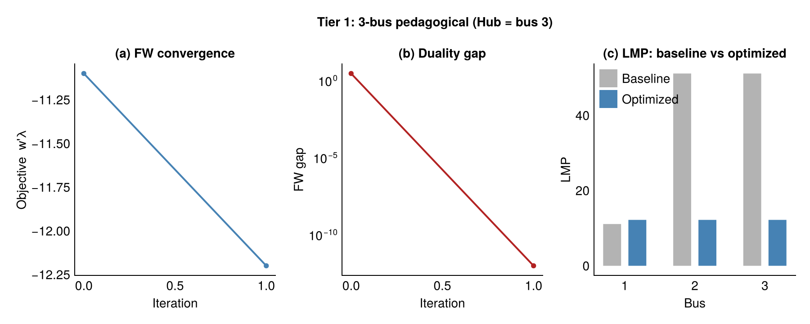
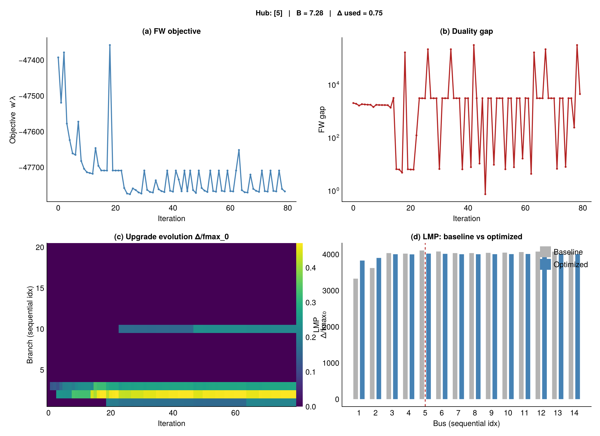
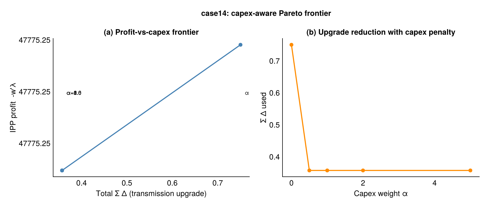
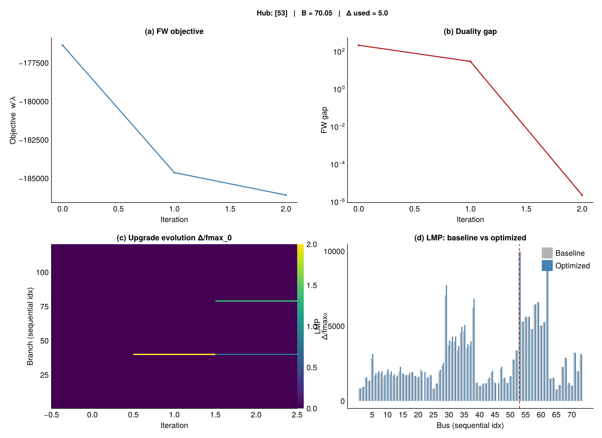
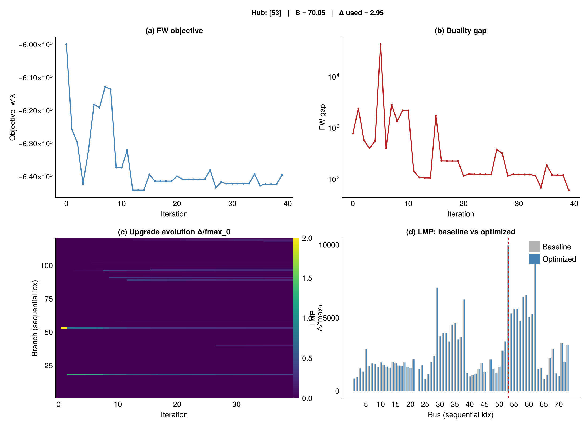

A differentiable bilevel approach via PowerDiff.jl
Sam Talkington · for Pablo Ruiz, NewGrid · 2026-05-01
PPA settles at hub $H$. Spot revenue at gen node $i$.
Question. Which transmission upgrades raise basis?
$w_i = +1$ if $i \in H$, $w_i = -1$ otherwise.
Outer: pick line capacities. Inner: full DC OPF.
Energy component (system-wide) + congestion component (zero unless lines bind).
$\min \boldsymbol{w}^\top\boldsymbol{\lambda}$ ⩵ max basis revenue. IPP is short the hub, long the rest.
$\boldsymbol{\lambda}_\star$ defined by KKT system. No closed form.
$m{+}1$ OPF solves per gradient. RTS-GMLC: 121 solves. Per iter.
With linear cost ($c_q{=}0$), LMPs are piecewise-constant in $\overline{f}$. Need $c_q{>}0$ for smooth gradients.
vjp(prob, :lmp, :fmax, w) → one transpose KKT solve. Cost: $\mathcal{O}(\text{nnz})$.
update_fmax! rewrites JuMP RHS. Preserves Cholesky factor.
for k in 1:max_iters solve!(prob) # forward OPF vjp!(g, prob, :lmp, :fmax, w; work=work) # 1 transpose KKT solve e_star = argmin(g) # FW oracle update_fmax!(prob, fmax_k + Δ_step) # in-place end
Per iteration: 1 OPF + 1 transpose KKT solve. $m$-independent.
Cheap gen at bus 1, expensive at bus 2, load at bus 3. Line 1→3 binding.

Analytical $\partial\lambda/\partial\overline{f}$ vs FD: max error $< 10^{-8}$. FW converges in 1 iter.

Add $\alpha\,\boldsymbol{c}^\top(\overline{\boldsymbol{f}} - \overline{\boldsymbol{f}}_0)$ to objective. Sweep $\alpha$. No new sensitivities needed.



Hourly multipliers from DAY_AHEAD_regional_Load.csv. Same FW loop, $\bar{g}$ averaged across hours.
github.com/grid-opt-alg-lab/PowerDiff.jl · talkington@pm.me